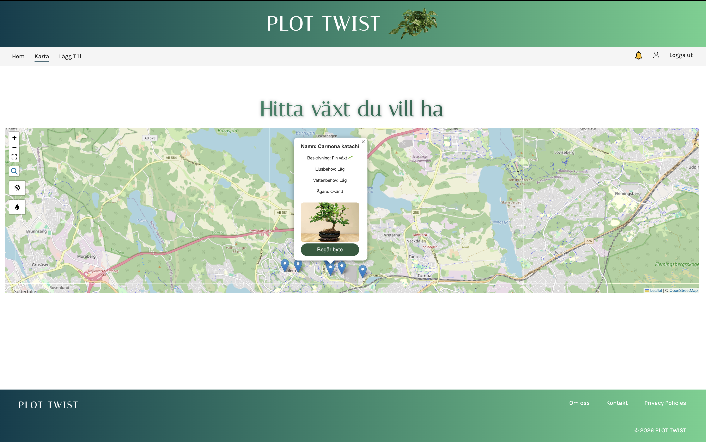
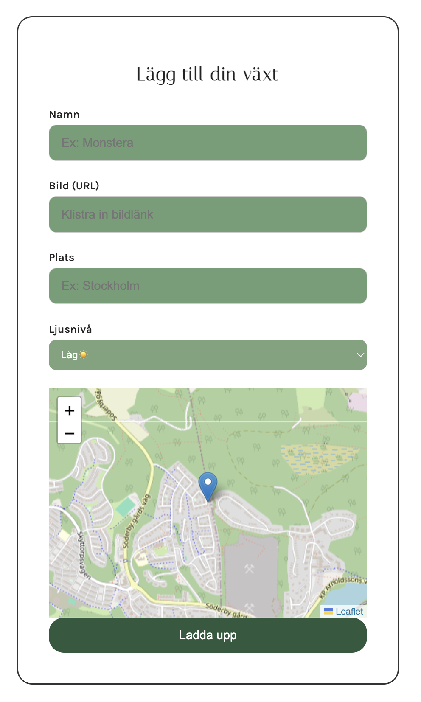
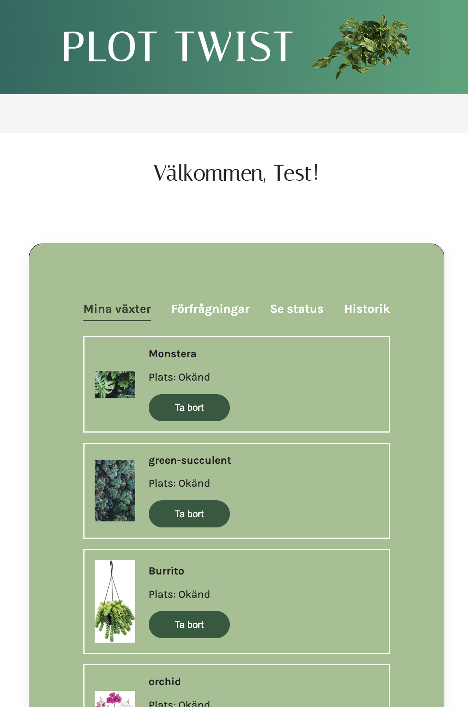
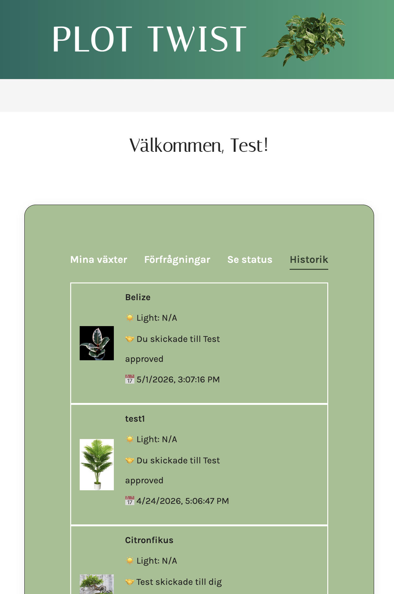

Plot Twist
Frontend Developer Team Project (2026)
A collaborative fullstack plant trading platform developed in an agile team environment with three frontend developers and two backend developers. The project focused on plant trading, user interaction, API integration, and responsive frontend development.




Team Collaboration
Plot Twist was developed as a collaborative school project involving three frontend developers and two backend developers. My primary role focused on frontend functionality, interface design, and implementing interactive user flows connected to backend APIs and application data.
Lägg Till Feature
I independently designed and developed the complete “Lägg Till” feature, including both the user interface and frontend logic from start to finish. The functionality allows users to create and publish plant listings through form handling, validation, dynamic interaction, and API-connected data flow.
Map Popup System
I independently built the popup card functionality used within the map view. The popup dynamically displays plant information connected to API-based data and user interaction. My work included popup UI design, DOM rendering, event handling, and integration between markers and fetched plant content.
Mina Växter & Historik
I independently developed the “Mina Växter” and “Historik” sections, focusing on user-specific plant listings, trade history, and frontend interaction flows. The implementation included dynamic rendering, status handling, responsive layouts, and API-connected content updates.
Additional Contributions & Reflection
I also contributed to the shared header and footer design used across multiple pages in the platform. Working on Plot Twist strengthened my understanding of collaborative frontend development, API integration, agile workflows, Git/GitHub collaboration, and structuring larger interactive web applications within a team environment.